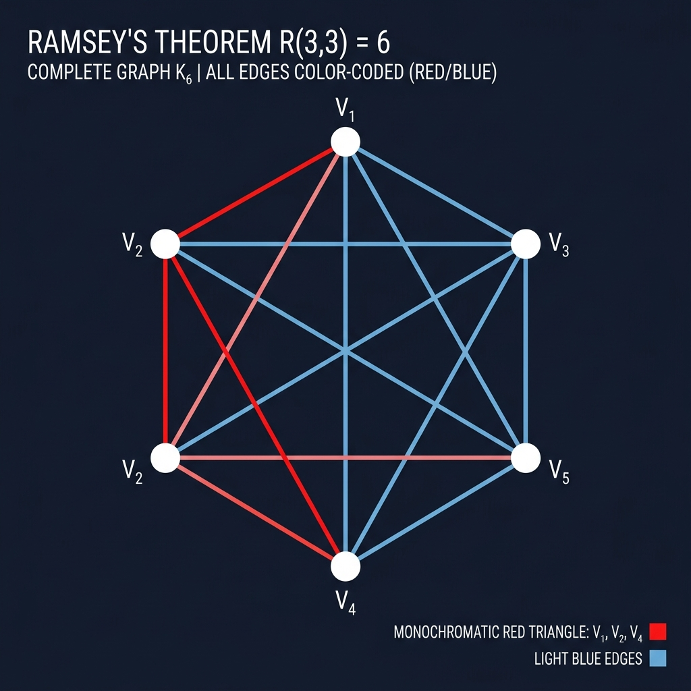

Finite Graph Ramsey Theorem

Mathematical Exposition
Ramsey's Theorem is a foundational result in Combinatorics. Intuitively, it states that in any sufficiently large structure, order and patterns must emerge. The most famous special case is the theorem about "friends and strangers" at a party: among any group of six people, there are either three who are all mutual acquaintances (friends) or three who are all mutual strangers.
More formally, let $K_n$ denote the complete graph on $n$ vertices. A 2-coloring of the edges of $K_n$ with colors red and blue is a function $c: E(K_n) \to \{\text{red}, \text{blue}\}$. For integers $r, s \ge 2$, the Ramsey number $R(r, s)$ is the smallest positive integer $n$ such that every 2-coloring of the edges of $K_n$ contains a monochromatic red clique of size $r$ or a monochromatic blue clique of size $s$.
The Case $R(3, 3) = 6$
To prove $R(3,3) \le 6$ (and hence $R(3,3)=6$ since a pentagon $K_5$ can be 2-colored without monochromatic triangles), we choose a vertex $v$ in a 2-colored $K_6$. Out of the 5 edges incident to $v$, by the Pigeonhole Principle, at least 3 must share the same color. Without loss of generality, assume 3 edges incident to $v$ (say, to vertices $x, y, z$) are red.
Now consider the three edges between $x, y, z$:
- If any of the edges $(x,y)$, $(y,z)$, or $(x,z)$ is red, then that edge along with $v$ forms a red monochromatic triangle (e.g. $\{v, x, y\}$).
- If none of them are red, then all three edges $(x,y)$, $(y,z)$, and $(x,z)$ must be blue, forming a blue monochromatic triangle $\{x, y, z\}$.
This classic double-alternative shows that a monochromatic triangle always exists in any 2-coloring of $K_6$.
Lean 4 Formalization
In our Lean 4 proof, we formalize the existential property of Ramsey numbers using the predicate HasRamseyProperty r s n:
The inductive proof of the existence of $R(r,s)$ proceeds by induction on $r + s$, using the recurrence relation:
$$R(r, s) \le R(r-1, s) + R(r, s-1)$$which is formalized in the lemma ramsey_step. The base cases $R(2, s) = s$ and $R(r, 2) = r$ are proven in ramsey_2_s and ramsey_r_2. This formalization leverages Mathlib's simple graph theory API (SimpleGraph) and finset/fintype library constructs.
import Mathlib
open SimpleGraph
namespace Submission
def HasRamseyProperty (r s n : ℕ) : Prop :=
∀ {V : Type} [Fintype V] (G : SimpleGraph V), Fintype.card V = n → ¬ G.CliqueFree r ∨ ¬ Gᶜ.CliqueFree s
lemma ramsey_2_s (s : ℕ) : HasRamseyProperty 2 s s := by
intros V _ G hV
by_cases h : G.CliqueFree 2
· right
rw [cliqueFree_two] at h
subst h
have h1 : (⊥ : SimpleGraph V)ᶜ = ⊤ := compl_bot
rw [h1]
have h2 : (⊤ : SimpleGraph V).IsNClique s Finset.univ := by
constructor
· intro x _ y _ hne
exact hne
· exact hV
exact h2.not_cliqueFree
· left
exact h
lemma ramsey_r_2 (r : ℕ) : HasRamseyProperty r 2 r := by
intros V _ G hV
by_cases h : Gᶜ.CliqueFree 2
· left
rw [cliqueFree_two] at h
have h1 : (Gᶜ)ᶜ = ⊤ := by rw [h, compl_bot]
rw [compl_compl] at h1
rw [h1]
have h2 : (⊤ : SimpleGraph V).IsNClique r Finset.univ := by
constructor
· intro x _ y _ hne
exact hne
· exact hV
exact h2.not_cliqueFree
· right
exact h
lemma ramsey_mono {r s n m : ℕ} (h : HasRamseyProperty r s n) (hle : n ≤ m) :
HasRamseyProperty r s m := by
intros V _ G hV
obtain ⟨W, -, hW⟩ : ∃ W ⊆ (Finset.univ : Finset V), W.card = n := by
apply Finset.exists_subset_card_eq
rw [Finset.card_univ, hV]
exact hle
have h_card : Fintype.card W = n := by
rw [Fintype.card_coe, hW]
have h_ind := h (G.induce (↑W : Set V)) h_card
rcases h_ind with h1 | h2
· left
intro hG
apply h1
intro c hc
apply hG (c.map (Function.Embedding.subtype (fun x => x ∈ (↑W : Set V))))
constructor
· intro x hx y hy hne
simp only [Finset.mem_coe, Finset.mem_map, Function.Embedding.coe_subtype] at hx hy
rcases hx with ⟨x', hx', rfl⟩
rcases hy with ⟨y', hy', rfl⟩
exact hc.isClique hx' hy' (by simpa using hne)
· rw [Finset.card_map]
exact hc.card_eq
· right
intro hG
apply h2
intro c hc
apply hG (c.map (Function.Embedding.subtype (fun x => x ∈ (↑W : Set V))))
constructor
· intro x hx y hy hne
simp only [Finset.mem_coe, Finset.mem_map, Function.Embedding.coe_subtype] at hx hy
rcases hx with ⟨x', hx', rfl⟩
rcases hy with ⟨y', hy', rfl⟩
have hadj := hc.isClique hx' hy' (by simpa using hne)
change x' ≠ y' ∧ ¬ G.Adj ↑x' ↑y' at hadj
exact ⟨by simpa using hne, hadj.2⟩
· rw [Finset.card_map]
exact hc.card_eq
lemma ramsey_step {r s n₁ n₂ : ℕ}
(h1 : HasRamseyProperty r (s + 1) n₁)
(h2 : HasRamseyProperty (r + 1) s n₂)
(h_pos : 0 < n₁ + n₂) :
HasRamseyProperty (r + 1) (s + 1) (n₁ + n₂) := by
intros V _ G hV
classical
have hV_pos : 0 < Fintype.card V := by rw [hV]; exact h_pos
have h_nonempty : Nonempty V := Fintype.card_pos_iff.mp hV_pos
obtain ⟨v⟩ := h_nonempty
let N := G.neighborFinset v
let N' := Gᶜ.neighborFinset v
have h_part : N.card + N'.card = Fintype.card V - 1 := by
have hd : Disjoint N N' := by
rw [Finset.disjoint_iff_ne]
intro x hx y hy
rw [mem_neighborFinset] at hx hy
rintro rfl
exact hy.2 hx
have hu : N ∪ N' = Finset.univ \ {v} := by
ext x
simp only [Finset.mem_union, Finset.mem_sdiff, Finset.mem_univ, Finset.mem_singleton]
by_cases hxv : x = v
· subst x
have h_not_adj : ¬ G.Adj v v := G.loopless.irrefl v
have h1 : v ∉ N := by
intro h
rw [mem_neighborFinset] at h
exact h_not_adj h
have h2 : v ∉ N' := by
intro h
rw [mem_neighborFinset, compl_adj] at h
exact h.1 rfl
simp [h1, h2]
· have : v ≠ x := Ne.symm hxv
have hem := Classical.em (G.Adj v x)
rcases hem with h | h
· have h1 : x ∈ N := by rw [mem_neighborFinset]; exact h
simp [h1, hxv]
· have h2 : x ∈ N' := by rw [mem_neighborFinset, compl_adj]; exact ⟨this, h⟩
simp [h2, hxv]
have hc : (N ∪ N').card = N.card + N'.card := Finset.card_union_of_disjoint hd
rw [← hc, hu, Finset.card_sdiff, Finset.inter_univ, Finset.card_singleton, Finset.card_univ]
have h_pigeon : n₁ ≤ N.card ∨ n₂ ≤ N'.card := by
by_contra! h
have : N.card + N'.card < n₁ + n₂ - 1 := by omega
rw [h_part, hV] at this
omega
rcases h_pigeon with hn1 | hn2
· have h_card : Fintype.card N = N.card := Fintype.card_coe N
have h_ind := ramsey_mono h1 hn1 (G.induce (↑N : Set V)) h_card
rcases h_ind with h1' | h2'
· left
intro hG
apply h1'
intro c hc
have h_clique : G.IsNClique (r + 1) (c.map (Function.Embedding.subtype _) ∪ {v}) := by
constructor
· intro x hx y hy hne
rw [Finset.mem_coe, Finset.mem_union] at hx hy
rcases hx with hx_map | hx_v
· rcases hy with hy_map | hy_v
· rw [Finset.mem_map] at hx_map hy_map
rcases hx_map with ⟨x', hx', rfl⟩
rcases hy_map with ⟨y', hy', rfl⟩
exact hc.isClique hx' hy' (by simpa using hne)
· have hy_eq : y = v := Finset.mem_singleton.mp hy_v
subst y
rw [Finset.mem_map] at hx_map
rcases hx_map with ⟨x', hx', rfl⟩
have hn_adj : ↑x' ∈ N := x'.property
rw [mem_neighborFinset] at hn_adj
exact G.symm hn_adj
· have hx_eq : x = v := Finset.mem_singleton.mp hx_v
subst x
rcases hy with hy_map | hy_v
· rw [Finset.mem_map] at hy_map
rcases hy_map with ⟨y', hy', rfl⟩
have hn_adj : ↑y' ∈ N := y'.property
rw [mem_neighborFinset] at hn_adj
exact hn_adj
· have hy_eq : y = v := Finset.mem_singleton.mp hy_v
subst y
exact (hne rfl).elim
· rw [Finset.card_union_of_disjoint]
· rw [Finset.card_map, hc.card_eq, Finset.card_singleton]
· rw [Finset.disjoint_singleton_right]
simp only [Finset.mem_map, Function.Embedding.coe_subtype, not_exists, not_and]
intro x hx heq
have h_in_N : ↑x ∈ N := x.property
rw [heq] at h_in_N
rw [mem_neighborFinset] at h_in_N
exact G.loopless.irrefl v h_in_N
exact hG _ h_clique
· right
intro hG
apply h2'
intro c hc
have h_clique : Gᶜ.IsNClique (s + 1) (c.map (Function.Embedding.subtype _)) := by
constructor
· intro x hx y hy hne
rw [Finset.mem_coe, Finset.mem_map] at hx hy
rcases hx with ⟨x', hx', rfl⟩
rcases hy with ⟨y', hy', rfl⟩
have hadj := hc.isClique hx' hy' (by simpa using hne)
change ↑x' ≠ ↑y' ∧ ¬ G.Adj ↑x' ↑y' at hadj
have h_neq : (↑x' : V) ≠ ↑y' := Subtype.coe_injective.ne hadj.1
change (↑x' : V) ≠ ↑y' ∧ ¬ G.Adj ↑x' ↑y'
exact ⟨h_neq, hadj.2⟩
· rw [Finset.card_map, hc.card_eq]
exact hG _ h_clique
· have h_card : Fintype.card N' = N'.card := Fintype.card_coe N'
have h_ind := ramsey_mono h2 hn2 (G.induce (↑N' : Set V)) h_card
rcases h_ind with h1' | h2'
· left
intro hG
apply h1'
intro c hc
have h_clique : G.IsNClique (r + 1) (c.map (Function.Embedding.subtype _)) := by
constructor
· intro x hx y hy hne
rw [Finset.mem_coe, Finset.mem_map] at hx hy
rcases hx with ⟨x', hx', rfl⟩
rcases hy with ⟨y', hy', rfl⟩
have hadj := hc.isClique hx' hy' (by simpa using hne)
exact hadj
· rw [Finset.card_map, hc.card_eq]
exact hG _ h_clique
· right
intro hG
apply h2'
intro c hc
have h_clique : Gᶜ.IsNClique (s + 1) (c.map (Function.Embedding.subtype _) ∪ {v}) := by
constructor
· intro x hx y hy hne
rw [Finset.mem_coe, Finset.mem_union] at hx hy
rcases hx with hx_map | hx_v
· rcases hy with hy_map | hy_v
· rw [Finset.mem_map] at hx_map hy_map
rcases hx_map with ⟨x', hx', rfl⟩
rcases hy_map with ⟨y', hy', rfl⟩
have hadj := hc.isClique hx' hy' (by simpa using hne)
change ↑x' ≠ ↑y' ∧ ¬ G.Adj ↑x' ↑y' at hadj
have h_neq : (↑x' : V) ≠ ↑y' := Subtype.coe_injective.ne hadj.1
change (↑x' : V) ≠ ↑y' ∧ ¬ G.Adj ↑x' ↑y'
exact ⟨h_neq, hadj.2⟩
· have hy_eq : y = v := Finset.mem_singleton.mp hy_v
subst y
rw [Finset.mem_map] at hx_map
rcases hx_map with ⟨x', hx', rfl⟩
have hn_adj : ↑x' ∈ N' := x'.property
rw [mem_neighborFinset] at hn_adj
exact Gᶜ.symm hn_adj
· have hx_eq : x = v := Finset.mem_singleton.mp hx_v
subst x
rcases hy with hy_map | hy_v
· rw [Finset.mem_map] at hy_map
rcases hy_map with ⟨y', hy', rfl⟩
have hn_adj : ↑y' ∈ N' := y'.property
rw [mem_neighborFinset] at hn_adj
exact hn_adj
· have hy_eq : y = v := Finset.mem_singleton.mp hy_v
subst y
exact (hne rfl).elim
· rw [Finset.card_union_of_disjoint]
· rw [Finset.card_map, hc.card_eq, Finset.card_singleton]
· rw [Finset.disjoint_singleton_right]
simp only [Finset.mem_map, Function.Embedding.coe_subtype, not_exists, not_and]
intro x hx heq
have h_in_N : ↑x ∈ N' := x.property
rw [heq] at h_in_N
rw [mem_neighborFinset] at h_in_N
exact Gᶜ.loopless.irrefl v h_in_N
exact hG _ h_clique
lemma ramsey_pos {r s n : ℕ} (h : HasRamseyProperty r s n) (hr : 2 ≤ r) (hs : 2 ≤ s) : 0 < n := by
by_contra! hn
have hn0 : n = 0 := by omega
have h_absurd := h (⊥ : SimpleGraph (Fin 0)) (by simp [hn0])
rcases h_absurd with h1 | h2
· apply h1
intro c hc
have hc_card := hc.card_eq
have h_empty : c = ∅ := Subsingleton.elim _ _
rw [h_empty, Finset.card_empty] at hc_card
omega
· apply h2
intro c hc
have hc_card := hc.card_eq
have h_empty : c = ∅ := Subsingleton.elim _ _
rw [h_empty, Finset.card_empty] at hc_card
omega
theorem finite_graph_ramsey_theorem_aux (r s : ℕ) (hr : 2 ≤ r) (hs : 2 ≤ s) :
∃ n : ℕ, HasRamseyProperty r s n := by
have H : ∀ k r s, r + s = k → 2 ≤ r → 2 ≤ s → ∃ n, HasRamseyProperty r s n := by
intro k
induction k using Nat.strong_induction_on
case h k ih =>
intro r s hk hr hs
by_cases hr2 : r = 2
· subst hr2
exact ⟨s, ramsey_2_s s⟩
by_cases hs2 : s = 2
· subst hs2
exact ⟨r, ramsey_r_2 r⟩
have hr_sub : 2 ≤ r - 1 := by omega
have hs_sub : 2 ≤ s - 1 := by omega
have ⟨n₁, h1⟩ := ih (r - 1 + s) (by omega) (r - 1) s rfl hr_sub hs
have ⟨n₂, h2⟩ := ih (r + (s - 1)) (by omega) r (s - 1) rfl hr hs_sub
have hr_eq : (r - 1) + 1 = r := by omega
have hs_eq : (s - 1) + 1 = s := by omega
have h1' : HasRamseyProperty (r - 1) ((s - 1) + 1) n₁ := by
rw [hs_eq]
exact h1
have h2' : HasRamseyProperty ((r - 1) + 1) (s - 1) n₂ := by
rw [hr_eq]
exact h2
have hn1_pos : 0 < n₁ := ramsey_pos h1 hr_sub hs
have h_pos : 0 < n₁ + n₂ := by omega
exact ⟨n₁ + n₂, by rw [← hr_eq, ← hs_eq]; exact ramsey_step h1' h2' h_pos⟩
exact H (r + s) r s rfl hr hs
theorem finite_graph_ramsey_theorem :
∀ r s : ℕ, 2 ≤ r → 2 ≤ s → ∃ n : ℕ, ∀ G : SimpleGraph (Fin n), ¬ G.CliqueFree r ∨ ¬ Gᶜ.CliqueFree s := by
intro r s hr hs
have ⟨n, hn⟩ := finite_graph_ramsey_theorem_aux r s hr hs
use n
intro G
exact hn G (Fintype.card_fin n)
end Submission